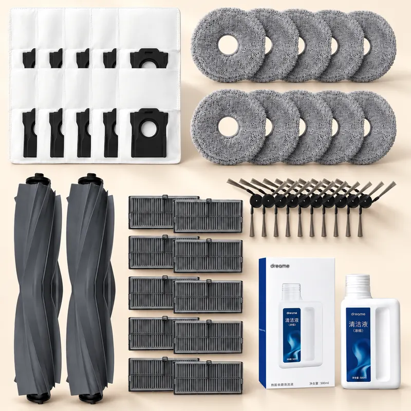
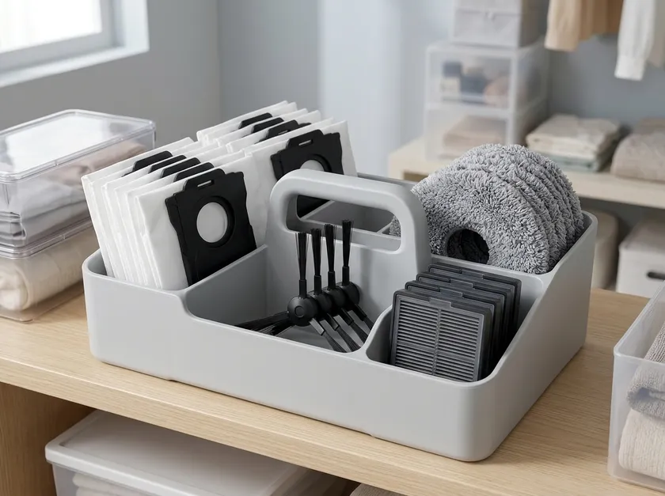
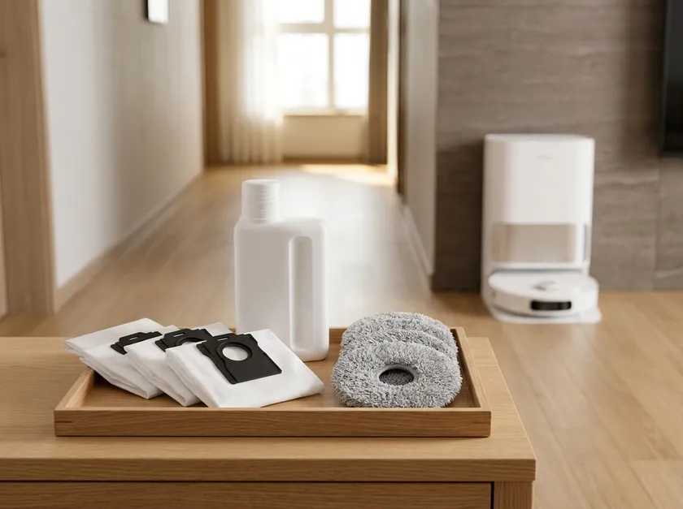
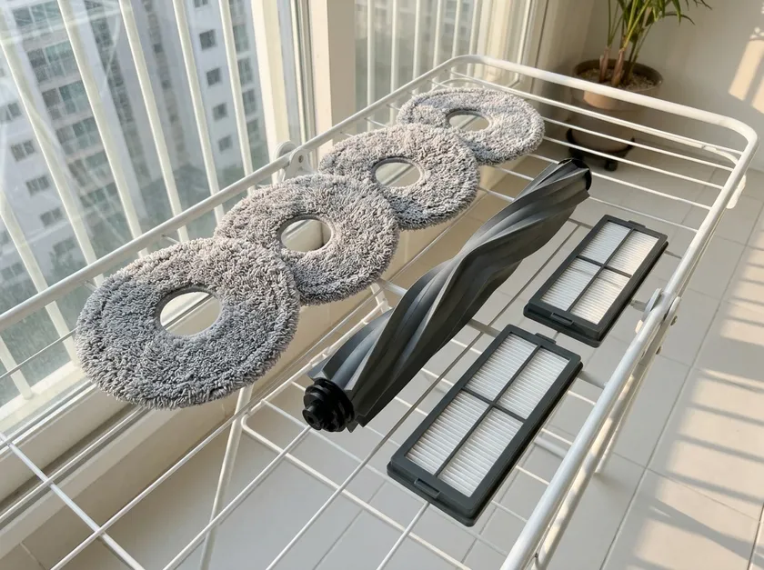

드리미 (Dreame)
드리미 X40 울트라 1년 세트 구성과 실리콘 브러시·물걸레 관리법
글·구성: 제이상점 · 기종별 1:1 호환 실물 점검 · 교체 주기 비교표 · 스마트스토어 패키지 안내

핵심 관리 · 선택 체크포인트
- 드리미 X40 울트라와 L40 울트라는 일체형 그레이 스파이럴 고무 메인브러시와 원형 회전 물걸레, 다크그레이 프레임 필터, 블랙 플라스틱 칼라 더스트백을 사용합니다.
- 세탁실 건조 트레이와 베란다 건조대에서 물걸레·브러시 말리기: 물세척한 원형 그레이 물걸레 패드와 일체형 그레이 스파이럴 메인브러시, 다크그레이 프레임 필터는 세탁실 상판 거치 트레이나 베란다
- 1년 패키지 구성품과 기종별 옵션 확인표: 다용도실 손잡이형 수납 캐디에 블랙 칼라 더스트백과 3암 사이드브러시, 원형 물걸레, 다크그레이 필터를 모아 두면 청소기 점검 날 캐디 하나만 꺼내어 편리하게 교체할 수 있습니다.
- 스테이션 옆 트레이와 다용도실 캐디로 동선 줄이기: 복도나 거실 스테이션 옆 사이드 테이블 트레이에 전용 클리너 용기와 여분 더스트백, 원형 물걸레를 올려 두면 급수나 더스트백 교체가 필요할 때 바로 손이 닿아 관리가 한결 수월합니다.
- 드리미 세제 라벨 확인법과 필터 건조 가이드도 함께 살펴보세요: 드리미 클리너를 사용하기 전 모델명과 라벨을 확인하는 방법은 드리미 로봇청소기 세제 모델명·병 라벨 확인법에서, 물세척 후 필터 건조 기준은 필터 세척 후 24시간 건조·재장착 안내에서 확인하실 수 있습니다.
실물 부품 디테일 · 관리 구성 이미지




부품 규격 · 점검 기준표
| 확인 항목 | 부품·옵션 특징 | 점검·선택 포인트 |
|---|---|---|
| 그레이 메인·3암 사이드브러시 | 일체형 그레이 스파이럴 고무 브러시 / 3암 블랙 사이드브러시 | 고무 날개 먼지 세척 및 양끝 베어링 캡 머리카락 정리 |
| 원형 회전 물걸레·필터 | 그레이 원형 극세사 패드 / 다크그레이 프레임 주름 필터 | 세척 후 완전 건조 및 예비 부품과 교대 사용 |
| 더스트백·500ml 클리너 | 블랙 플라스틱 칼라 더스트백 / 500ml 손잡이형 클리너 | 상세페이지 선택 옵션에서 세트 구성 및 수량 확인 |
💡 교체 주기가 겹치는 필터·브러시·물걸레·더스트백은 단품 배송비를 여러 번 내기보다 드리미 X40 Ultra 기간별 세트(3개월·6개월·1년)로 미리 구비해 두면 물세척 후 24시간 교대 건조까지 끊김 없이 관리할 수 있습니다.
자주 묻는 질문 (FAQ)
Q. 드리미X40울트라의 그레이 메인·3암 사이드브러시 규격과 관리 기준은 무엇인가요?
A. 일체형 그레이 스파이럴 고무 브러시 / 3암 블랙 사이드브러시 규격을 사용하며, 고무 날개 먼지 세척 및 양끝 베어링 캡 머리카락 정리 기준으로 점검·교체하면 청소 효율을 안정적으로 유지할 수 있습니다.
Q. 드리미X40울트라의 원형 회전 물걸레·필터 규격과 관리 기준은 무엇인가요?
A. 그레이 원형 극세사 패드 / 다크그레이 프레임 주름 필터 규격을 사용하며, 세척 후 완전 건조 및 예비 부품과 교대 사용 기준으로 점검·교체하면 청소 효율을 안정적으로 유지할 수 있습니다.
Q. 드리미X40울트라의 더스트백·500ml 클리너 규격과 관리 기준은 무엇인가요?
A. 블랙 플라스틱 칼라 더스트백 / 500ml 손잡이형 클리너 규격을 사용하며, 상세페이지 선택 옵션에서 세트 구성 및 수량 확인 기준으로 점검·교체하면 청소 효율을 안정적으로 유지할 수 있습니다.
제이상점 1:1 검수 추천 패키지 · 구매 안내
☑️ 주문 전 확인해 두면 좋은 제이상점 안심 포인트
· 기종별 1:1 전용 규격 검수: 모델명·연식에 맞는 호환·정품 구성을 검수해 오주문 불안을 줄였습니다.
· 해외직배송 미리 주문 팁: 중국 구매대행·해외직배송 상품이므로 마지막 여분 1개를 꺼내 쓰는 시점에 개인통관고유부호와 함께 여유 있게 주문해 두시면 훨씬 경제적인 비용으로 끊김 없이 교체하실 수 있습니다.
· 기종별 1:1 전용 규격 검수: 모델명·연식에 맞는 호환·정품 구성을 검수해 오주문 불안을 줄였습니다.
· 해외직배송 미리 주문 팁: 중국 구매대행·해외직배송 상품이므로 마지막 여분 1개를 꺼내 쓰는 시점에 개인통관고유부호와 함께 여유 있게 주문해 두시면 훨씬 경제적인 비용으로 끊김 없이 교체하실 수 있습니다.
📖 더 많은 가정 내 사용 스토리와 상세 후기가 궁금하시다면
📱 네이버 블로그 모바일 원문 보기 ↗